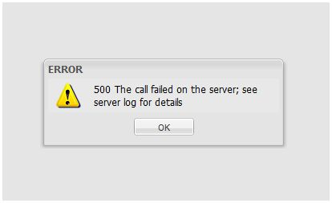

|
This page last changed on Feb 15, 2012 by mb.
Hi all,
when I open my composer page, it shows me this:

How can I do ?
Thanks
|
Can you please give it another try?
We did restart the composer, so hopefully this will be fixed.
We are aware of stability issues with the composer and are working on them. It'll get better but this takes time...

Posted by ebariaux at Feb 15, 2012 12:03
|
|
Hi Eric thanks.
The same error happend when I try to delete a device "not well created",
excuse me, in my composer I have many devices created.
Sometimes the was trouble creating a device;
I can see in those devices in the devices list,
but when I try to cancel/delete them.
Delete device...
500 The call failed on the server.
I tried to delete theme many times, in different days, but the answer is always the same.
Thanks.
Posted by mb at Feb 15, 2012 14:57
|
|
I'm having the same issue every time I try to save my configuration. Could this be caused by something in my configuration?
Posted by hedg12 at Feb 17, 2012 04:04
|
|
It would seem that it was my config. It didn't like a landscape page I had - once I deleted that page it saved OK.
Posted by hedg12 at Feb 17, 2012 05:00
|
|
Hi Eric,
I'm stillhave the "500 error":
- when I'm connecting with the online designer, loading the devices.
- when I try to delete a device "not properly created"
Can someone help me ?
It't possible due to the number of devices ? more then 60 ?
Thanks
Posted by mb at Feb 27, 2012 09:57
|
|
Indeed, the designer currently have issues dealing with a big number of devices / commands.
We're looking into it but haven't found an easy solution for now.
I'm re-writing a lot of code right now to handle this correctly but it'll take some time (a few weeks) before this fix is ready.
I'm sorry I can't be of much help right now.
Posted by ebariaux at Feb 27, 2012 14:46
|
|
Thanks for your work Eric, I'm waiting without hurry.
Just a suggestion: Ordering the devices.
Having more than 50 items, is very noisy working without a list ordered.
possible solutions ?
- alfabetical order
- manual order
- group of devices... don't seems a bad idea... (least at me

Thanks
Posted by mb at Feb 27, 2012 17:12
|
|
{kind=link}
{kind=link}
{kind=link}
{kind=link}
{kind=link}